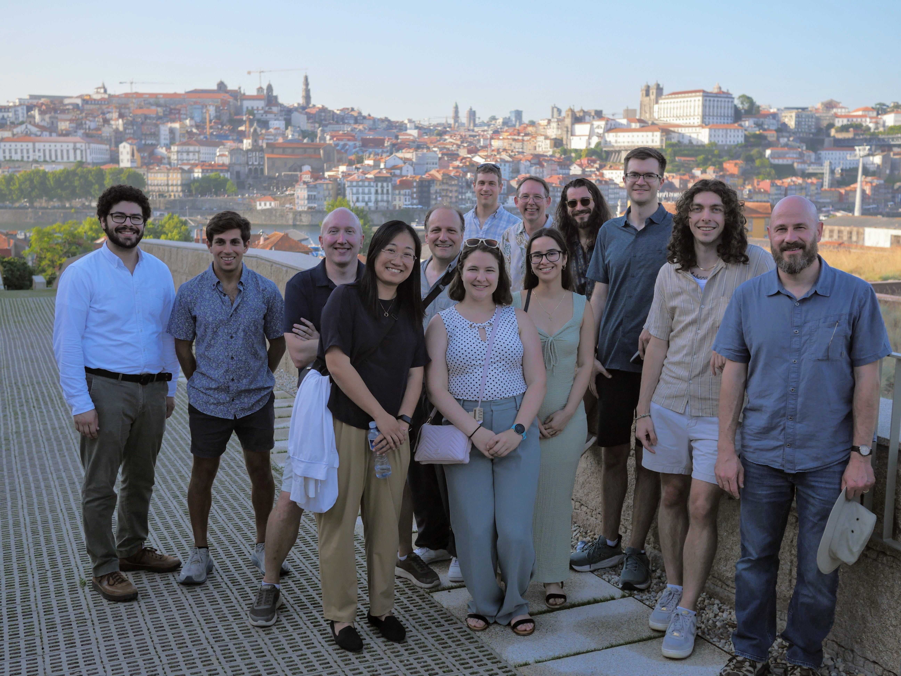
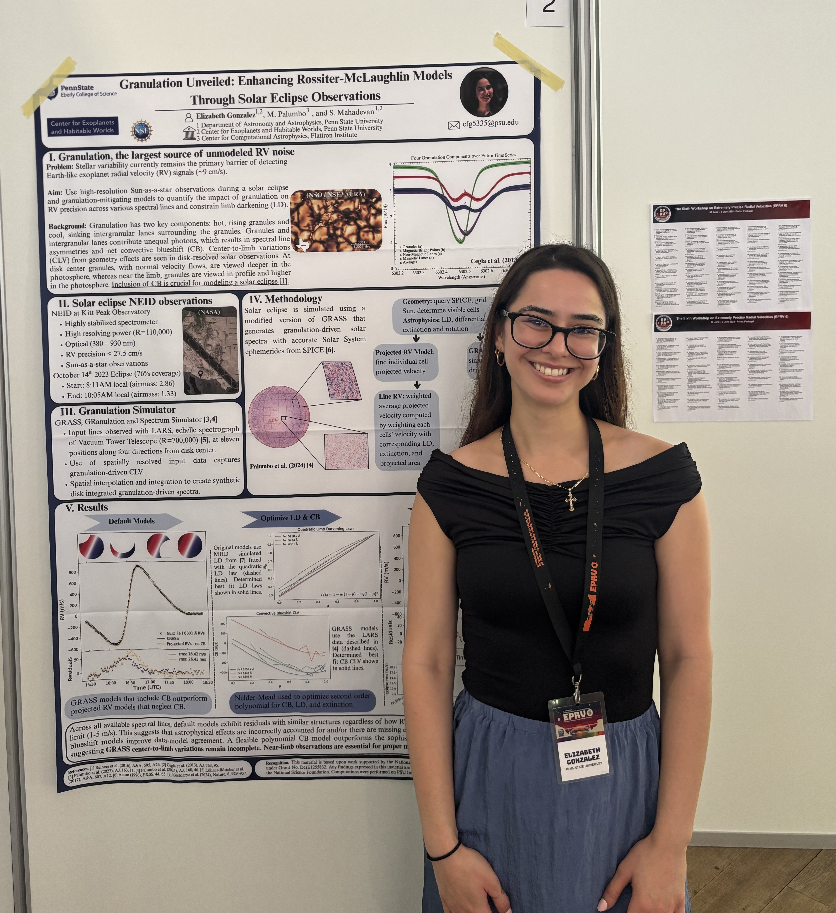
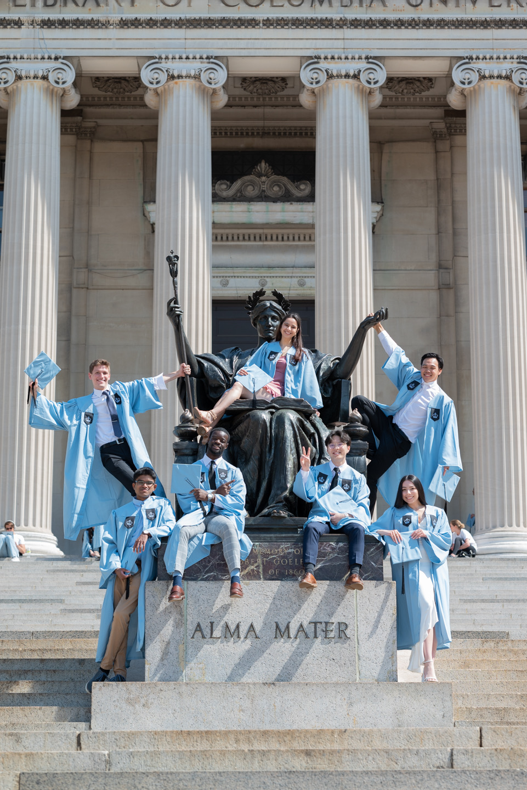
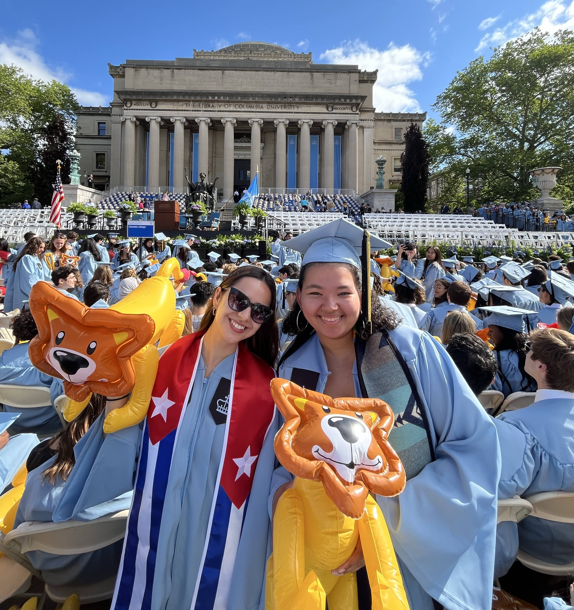
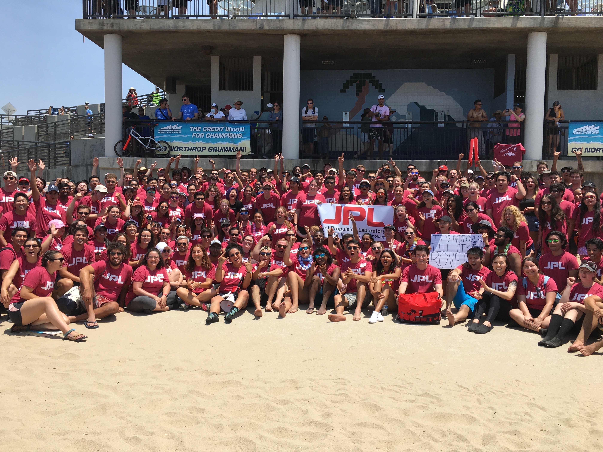
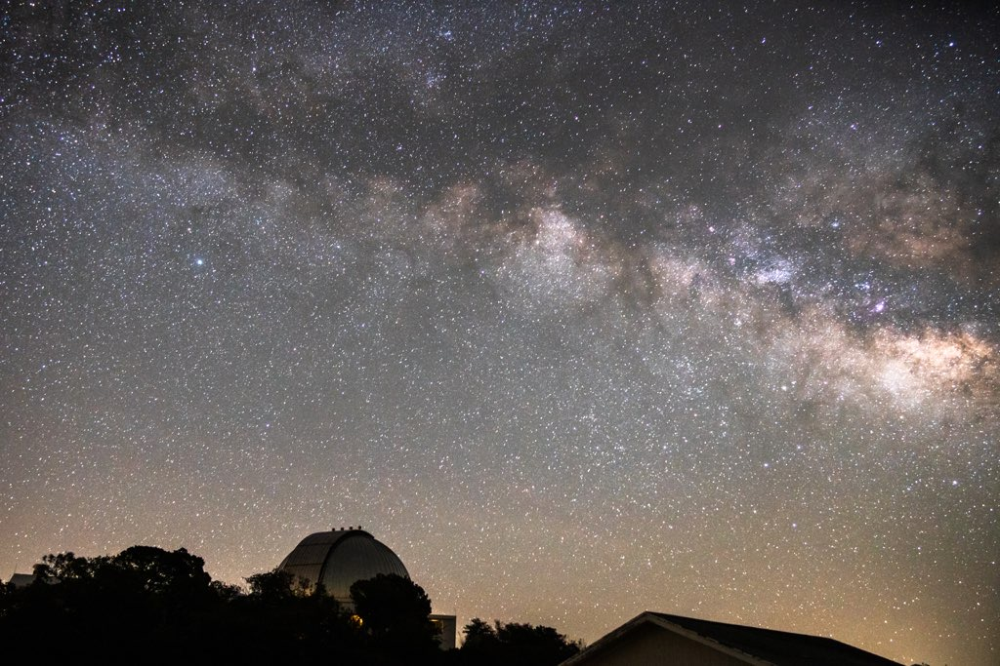
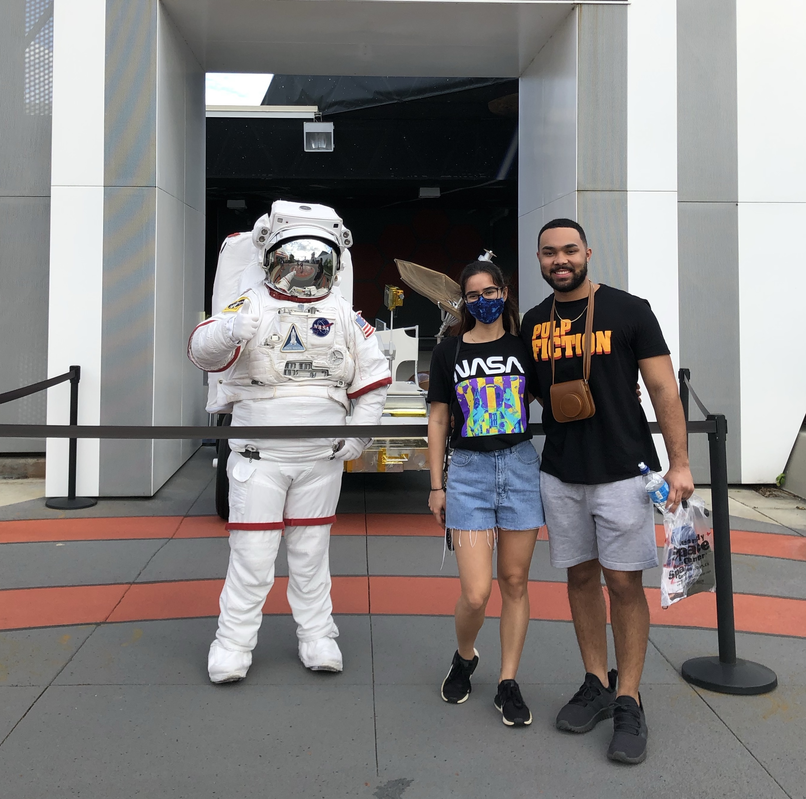
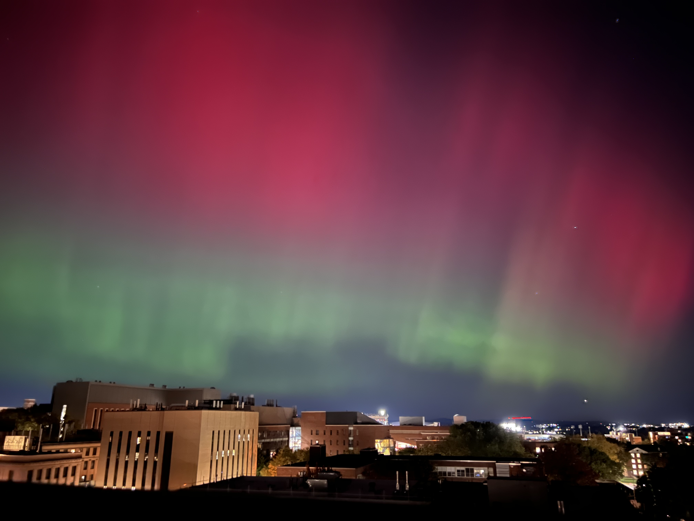

About Me
My name is Elizabeth Gonzalez, and I am a Ph.D. candidate in Penn State's Department of Astronomy & Astrophysics working with Prof. Eric Ford. I earned an Astrophysics B.A. from Columbia University, where I gained research experience in both exoplanets and star formation.
My research focuses on developing methods to mitigate stellar variability for extreme precision radial velocity (EPRV) measurements. I use resolved and integrated solar light to gain insights into the spectroscopic impacts of stellar variability. My work combines observational solar data and modeling to better understand these impacts and develop tools that can help distinguish planetary Doppler signals from stellar ones. I am a member of the NEID and HPF instrument teams, where I contribute to the development of EPRV. Outside of work, you will likely find me reading, hosting, salsa dancing, or planning a trip.










